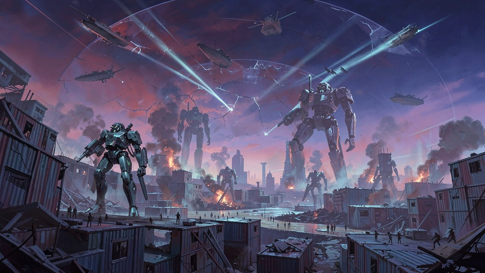
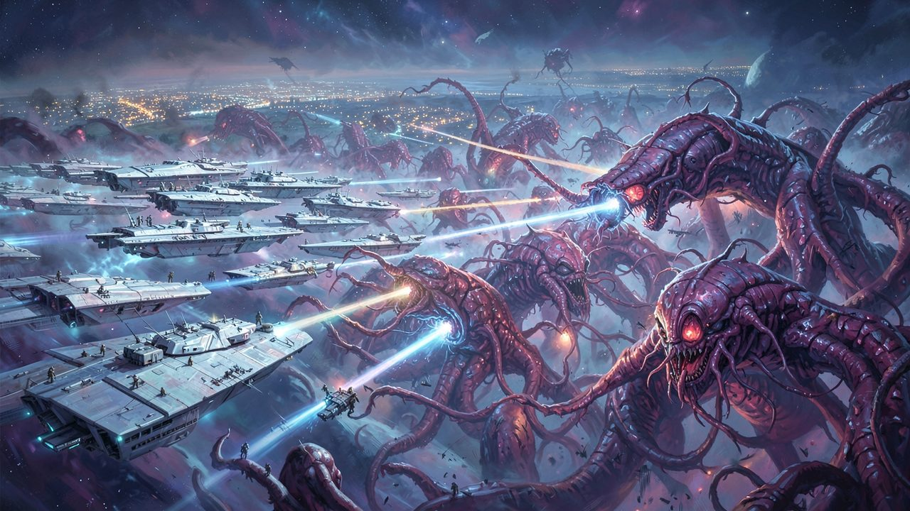
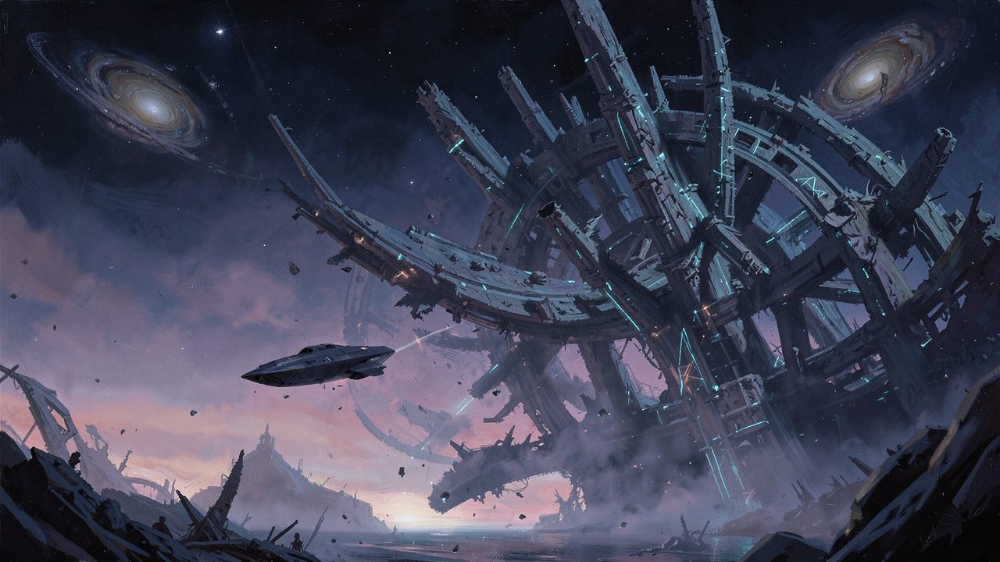
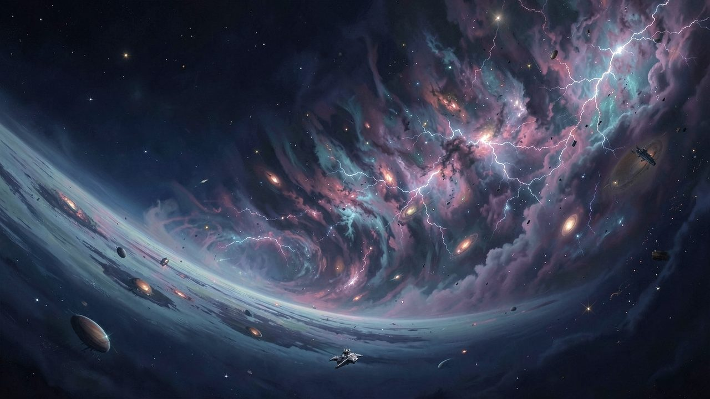
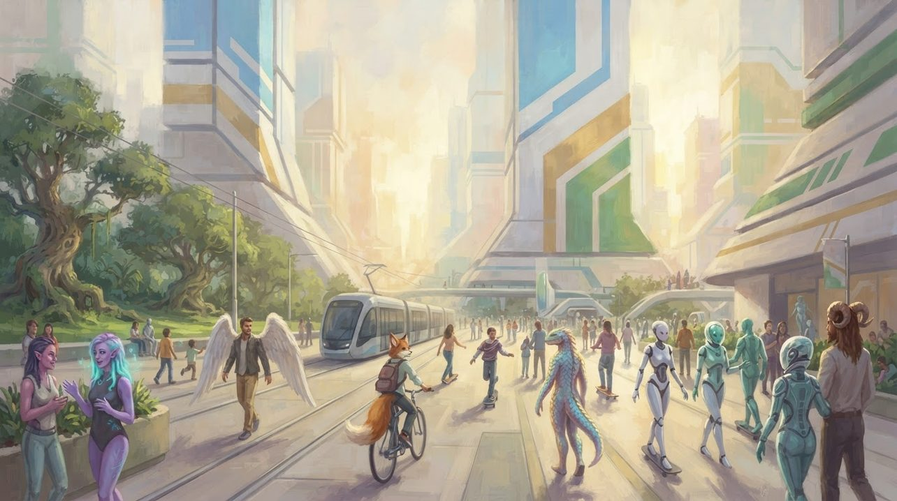
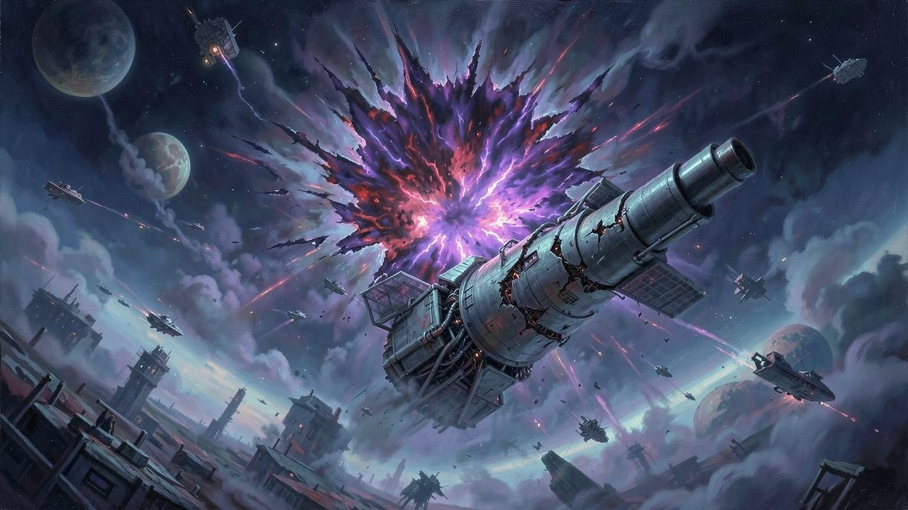
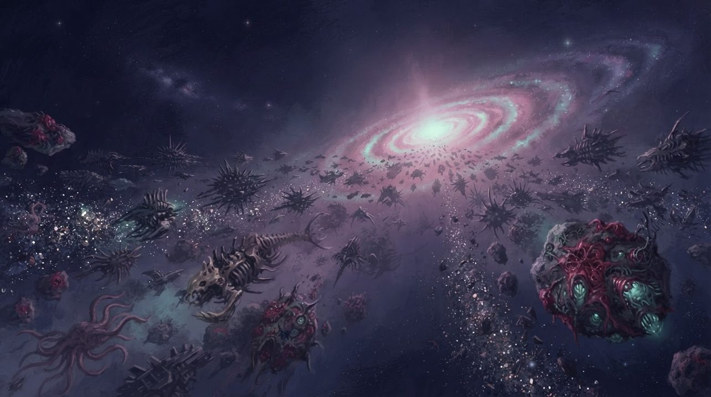
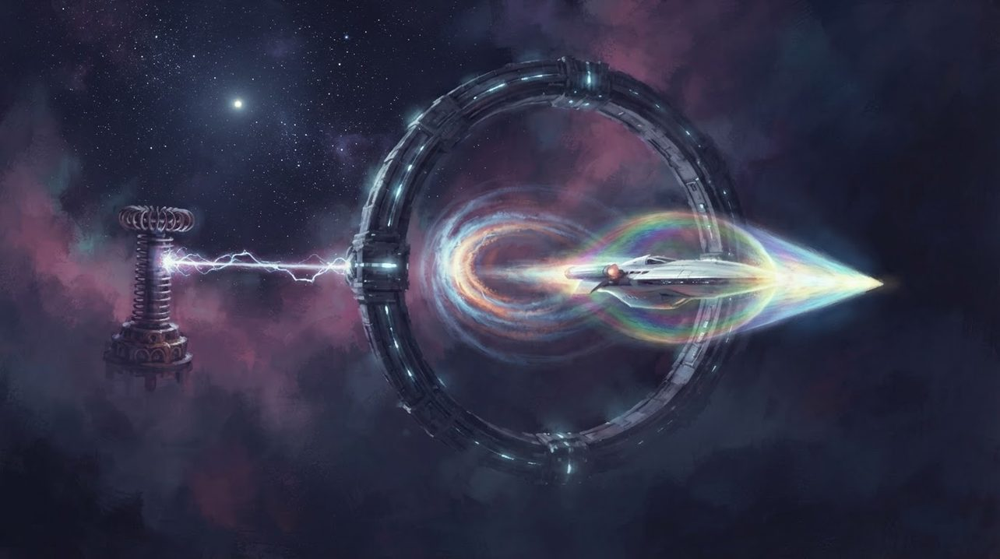
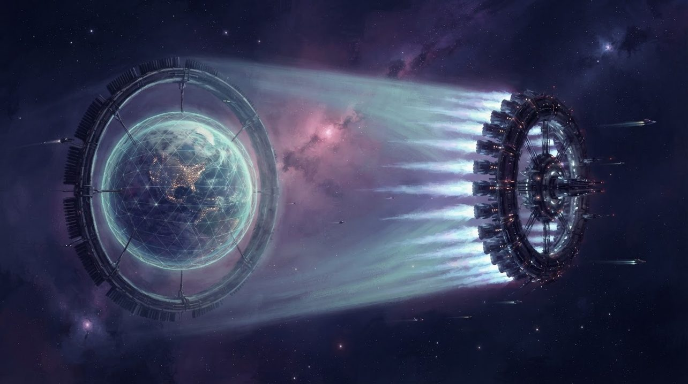

The universe
It starts in our own world, in 2019, and grows outward. Humanity spreads across the solar system and into the stars. Then comes a war that decides what humanity becomes, and after it a galaxy, and then a whole universe, full of things that want to eat it.
The tone is grounded. It isn't hard science, but it's believable enough that a layperson goes "yeah, that could work". There are FTL ships, megastructures, sentient machines, planet-killing superweapons, biological immortality and bodies you can redesign at will. There is no teleportation and no magic.
The outlook is optimistic. Humanity wins, and what it wins is strange: a civilization of immortal, endlessly customizable people, where humans, aliens, robots and AI live together kindly, everything is free, nobody has to work, and the whole universe is there to explore. By conservative standards it looks weird. It also never gets completely safe, because the dark between the galaxies is full of monsters.
Each era of the timeline below was imagined as its own TV series or film, and each of my AAL games is set in one of them.
Why "AAL"?
AAL stands for Alteisen Arsenal Laboratories, a military technology company that makes a cameo in almost every era. It stays neutral and supplies every side with the same equipment, simply because that equipment is good, reliable and well designed. Think Anaheim Electronics in Gundam's Universal Century, or IKEA for military, industrial, power and aerospace tech. It's also a small nod to the TOHA Heavy Industries of Tsutomu Nihei's manga.
It began as a faction mod I made for Cortex Command, full of exotic weapons, ships and units, designed on the fly with whatever seemed cool. It has grown up with me since then, and so has the universe around it.
The timeline
There are no dates or year numbers, only eras, each defined by the main thing going on, in order. The early eras are a familiar, gritty universe much like ours. Everything changes after the Eradication Wars.
- Act I · The old world — a universe that works like ours
-
01
Our world, then the solar system
The universe starts from the real world of 2019 and branches off from there. Humanity slowly spreads across the solar system, puts its vast resources to work, and builds the first basic megastructures.
-
02
The Old Mentality World
With the solar system mostly settled, colonies push out to the nearest stars, and the megastructures grow bigger and more advanced. Sentient AIs, the synths, are created by accident and cause a stir, until people come to terms with robots living among them. Non-sentient AI keeps doing the labour, automation and caretaking.
Humans and synths both learn that neither is perfect. A synth is only as capable as its body, and the best bodies are expensive and built from rare parts that are hard to replace. The human body, by contrast, evolved to run on whatever nature provides. Meanwhile, the first signs of alien intelligence are detected, though nobody has met any aliens yet.
-
03
A Dividing World
First contact happens many times over. Some aliens are primitive, some intelligent, some just animals. Their DNA opens up biology and genetics, and makes a new upgrade to Homo sapiens possible: Homo mugen.
Meanwhile the colonies turn on each other for all the old reasons: ideology, greed, misunderstanding, stupidity and bigotry. Corruption, bullying and racism are as alive out here as they are on Earth today. Scientists, philosophers and leaders, both human and alien, see that these old ways have no future for anyone. The aliens finally give humanity an outsider's view of its faults. Together they set a plan in motion: transform humans and aliens alike into Homo mugen, and make peace natural, permanent and self-sustaining.
- Act II · The turning — the war that decides what humanity becomes
-
04
The Eradication Wars
Homo mugen is a designed species that can transform ordinary humans into its own kind, and it spreads between the colonies like a happy outbreak, a feel-good Plague Inc. It brings immortality from ageing and illness, abundance, and a body you can shape into anything. It spreads through pleasure, affection and seduction, winning people over by making them feel good, which melts hatred and bigotry in a way no argument could. That's why the change, once it takes hold, is so powerful and so permanent.
One kind of person is terrified by it: the dictators, the thugs, and everyone whose power rests on bullying others with impunity. In a world like that, they lose that power for good. They rally a "purity" side that wants everyone kept natural and kept down, and they threaten the Mugen side with extinction. With its survival at stake, the Mugen side pushes the evolution through and transforms society entirely. The staunchest purity holdouts answer with genocide.
What follows is pure apocalypse with nobody holding back, fought between two mentalities with no common ground left: domination, scarcity and hierarchy on one side, and cooperation, abundance and freedom on the other. Fleets on the scale of Legend of the Galactic Heroes clash, alongside superweapons, mechs and brutal fighting on planets. The Mugen side defends itself and puts a permanent end to it, for a safer future. When the war is over, every remaining human has become Homo mugen.
Design: AAL Eradication Wars
The Eradication Wars: a war for the future of the species, fought to the end. - Act III · The Mugen age — a kind civilization against a hostile cosmos
-
05
Golden Age Expansion of Space Colonies
Ageing is gone, scarcity is gone, and nobody is stuck with the body they were born in. With that, the things that used to drive people to cruelty simply evaporate, and that's why the war never repeats itself. Society reorganizes around Nonviolent Communication, innovation and wellbeing, and finds ways to meet everyone's needs, so suffering, conflict and hatred never again grow into war. It's a true victory over the seven deadly sins.
Civilization also unlocks digital immortality: with a backup, death becomes something you recover from. More friendly and neutral alien species join. Across many star systems, society becomes something like a kind, utopian space Scandinavia, which in time the whole Milky Way adopts. The era ends with the discovery of the dreaded space monsters.
Design: Tactical Arsenal Command -
06
Fight for the Milky Way: the early period
Dormant and active space monsters are discovered, fought and defeated, and each new nightmare is different from the last, or worse. It builds to an epic crossfire in which several monster groups, humans and allied aliens all fight to wipe each other out. Humans and their allies are the ones left standing. Then probes sent beyond the Milky Way find far bigger threats.
-
07
Fight for the Milky Way: the late period
The galaxy is still being colonized, and many pockets are unexplored, the galactic core among them. Humanity and its allies are now the dominant force in the Milky Way. But space monsters of an epic scale are arriving or drifting in from outside, and they make the earlier ones look trivial.
The galaxy-spanning war grows intense. It ends with a major threat defeated and a hard realization: more are coming, the universe is being ravaged with nothing to stop it, and fighting defensively can't be sustained.

The fight for the Milky Way: each new monster worse than the last. -
08
Intergalactic Deep Space Expeditions
To turn the tide, humanity needs weapons that shoot far, hit hard and wipe out monsters sustainably, and the Milky Way's own science and resources aren't enough to build them. So maverick xenoarchaeologist agents set out in stealth FTL ships to find ancient alien technology.
They uncover where the monsters come from. They find useless tech, cautionary tales of dead civilizations, and unstable tech that has to be destroyed. They bring back controversial tech to debate with the council, and finally the components that are actually needed. The data goes ahead by hyperwave, but the physical parts come home on an epic return trip. Humanity builds a superweapon and fires it. Cliffhanger.

Out between the galaxies, the ruins of civilizations that got it wrong. -
09
Defence of the Milky Way
The superweapon fires, and reality breaks. A dimensional fault plunges a whole group of star systems into chaos (the Chaos System explains why). Strange dimensional monsters are fought and cleansed, reality is repaired, and the weapon's design flaws are fixed.
A new superweapon is built and fired just in time to obliterate an incoming monster megafleet. The Milky Way is no longer on the back foot. It has the technology, the weapons and the know-how, and it goes on the offensive.
Design: AAL Superweapon -
10
Space Monster Annihilation Campaigns
The end of the monster wars. Autonomous berserker superweapons are built: self-replicating probes in the spirit of a von Neumann machine. They're tested, improved after a few accidents, and finally perfected. Then they're sent out into the universe to wipe out the space monsters, save planets from corruption, clear occupied regions, destroy planets that are already lost, and lay down the infrastructure for a safe, sustainable future.
Design: AAL Standalone -
11
Exploration of the Universe
With the universe safe at last, humanity colonizes beyond the Milky Way. This one is a slice-of-life series: each episode follows a different person doing whatever they like in a wide-open universe. It ends with the edges of the universe coming into view. Humanity discovers the Wilderness, and learns that the universe is both finite and infinite.
Design: Planet Warfare -
12
Exploration of the Wilderness
People venture into the Wilderness at the outer border of the universe. They find weird anomalies, work out its structure, and learn to live with it, use it and respect it. Throw bad things in and bad things come back out, so the galactic civilizations learn to stay harmonious and organized to keep the risk down.

The Wilderness: the edge of the universe, which sends back whatever goes in, changed. -
13
To Infinity and Beyond
The endless, vibrant cycle of the universe. Even mastered, nature is so vast and complex that it never runs out of surprises. Places decay, reinvent themselves, reshuffle and randomize, old places become unrecognizable, and people change. Nothing stays the same except the laws of the universe. Every day is exciting, and the universe can never grow boring, old or dead. Humanity accepts this infinity and embraces it happily.
Life in the Milky Way
After the Eradication Wars, humans and every reasonable alien species become one people. Everyone ends up as Homo mugen, a biologically immortal and endlessly customizable omni-species, simply because it's too beneficial not to. Allied aliens live mixed into the population, either in compatibility suits or reshaped into humanoid form for practicality. Most of my games take place in this era.
Everything is free
Shelter, food, water, power, hygiene, tools, transport and entertainment are free, clean and guaranteed quality. Anything can be customized and printed to a preset, then returned and recycled automatically when it wears out.
People own very little, because there's no need. Keys are biometrics, and your ID and data live in a secure galaxy-wide registry that everyone can actually trust.
Your body is a choice
Nobody ages or gets ill, and medical stations will painlessly change anything that's biologically feasible: skin, hair or eye colour, height, a tail, a pair of wings, going full furry, going digital and coming back. Anything goes, unless it's dangerous, unsustainable or incompatible with everyone else.
People can still be killed. With a backup of their brain and spine they come back in a new body. Without one, they're gone for good.
No politics, no laws, no crime
It's a resource-based economy that follows natural law. Experts run their own fields, supported by networked AI, and coordinate with whoever their work affects. Leaders exist, but as pioneers who lead from the front, not commanders who give orders.
Crime is treated as a sign that someone needs support, empathy and a listening ear. Justice is restorative, built on Nonviolent Communication ("giraffe language"). There's no punishment, guilt or good-versus-evil.
A personal AI for everyone
Every person has an AI guardian. It gives honest, neutral facts instead of superstition, helps with any task, defuses conflicts, notices injustice, and meets social and emotional needs, love and intimacy included.
You can ask to be left alone, and people do. The AI still keeps an eye on your safety.
Raised by the system
There's no parenting and there are no families. At some point everyone accepted how unfit most people are to raise children. So children grow up in a system built for it, with abundance, learning, curiosity, safety, honesty and love.
They're told the rough truths too: death, extinction, violence, and humanity's long history of stupidity.
Work is optional
Automation is maxed out in every field. Almost nobody ever has to work, so people chase whatever life offers: sport, science, art, design, travel, romance, adrenaline, exploration.
The military is surprisingly popular. The most powerful weapons need a human to authorize them, and the military is the front line of exploration, science and action, with mechs, spacecraft and real teamwork.
Joining
Anyone who wasn't raised in this system, whether a newly met alien or a holdout from the old world, is given every reason and every piece of evidence to come willingly into re-education. They stay there until it's certain they can live in the galactic community. A great deal of effort goes into letting a person change from within before any force is used.
If someone is hard-wired to reject it, they're reset and reborn by force. The reasoning is simple: every citizen has easy access to things as dangerous as nuclear weapons. In practice, any being that can think and feel, however alien, finds the offered world worth joining.
What it looks like
Everything is designed for wellbeing, whether it's a residential block, a factory, a spaceport or a remote outpost. Every sector has its own colour code: red and black for the military, beige for shipping, purple for industry, gold for medicine, sky blue and white for living spaces, and so on. Spaces are clean, standardized and built from mass-produced prefab parts, yet stylish, lived in and full of small details of busy, happy life.
Cities are walkable. People get around by train, tram, bicycle, scooter and skateboard, not cars and trucks, and the skies aren't jammed with flying cars. Nature preserves and parks sit right next to the cities, kept separate but easy to reach.

Laws of the universe
This is what makes the AAL Universe its own thing. Its laws of nature include the limits that every big game eventually runs into, and the universe deals with them the way it deals with gravity.
No teleportation
Nothing jumps instantly from one place to another. Ships fly, and near planets and stars they fly the slow way (see FTL travel).
No magic, but an astral realm
The astral realm is a parallel dimension woven through the physical world. Souls rest there between lives before being placed into new beings. It acts as the universe's will, though it has no mind and works on instinct. A rare few can tap it for psychic powers like telekinesis, at enormous cost and difficulty.
No beginning, no end
The universe was never born and will never die. A big bang is not the event but an event, a rare local catastrophe that can even be defused. No matter is ever created or destroyed; it only changes state.
The Wilderness
The universe is a vast stable zone surrounded by the Wilderness. Picture a bowl whose edges curve up forever. Anything flung out drifts up the slope, gets reshuffled, fused, purified or corrupted by its storms, and is sent back. Sometimes it returns through rifts that open in voids starved of matter.
Equilibrium
Everything in the universe tends toward becoming stable, settled and idle. Gravity pulls things together and slows them down, while weather, life, chemistry and anomalies keep eroding, growing and reshaping them. Gravity has range limits, so drifting worlds slowly come to rest. Stars pulse between hot and cold phases instead of burning steadily.
The universe also tries to spread out anything too dense or too fragmented. When that pressure builds up, it bursts out as a quake, a tsunami, an eruption or an anomaly. Cram too much into one spot and it transforms: a planet can collapse into a gas giant, a star, a black hole, or even a local big bang. Megastructures have to be built big and solid, because a structure made of many small fragments gets ground back into a ball.
The Chaos System
The universe also guards itself against too much happening at once. When too many things exist in one place, or too much violent activity piles up, it intervenes. The truer name would be the Harmony System, but from the inside it looks like chaos: violent, storm-like events that restore order.
Its response scales with the overload. At first it's subtle: unimportant things fade into the background, complex things simplify, crowds of similar things merge into one, and expensive processes slow down. At the extreme, space-time itself shatters and a void rift opens to swallow whatever caused the overload. Nothing is deleted. Things get displaced, trapped, mutated or transformed, and reappear later somewhere else, often in the Wilderness.
- Full powerEverything runs, with capacity to spare.
- NormalThe universe breathes on its own.
- Getting spicyThe Chaos System steps in: fusing clumps of matter, grouping things together, slowing time.
- The line the universe never lets anything cross
- LagNever allowed. Everything above exists to keep the universe from ending up here.
The universe watches itself constantly. It sweeps zone by zone, from star systems up to superclusters, thinning out crowded hotspots before they become a problem. The first time anyone saw the extreme response was the AAL Superweapon incident. A planet-killing cannon, badly configured, unleashed so much at once that it tore a wound in space-time big enough to swallow two star systems.

Designer's note
Why the universe works this way
Many games are designed as if hardware will improve forever, so whatever lags today will run smoothly tomorrow. I've played enough of them to know how that ends. Cortex Command could only handle a small number of objects at once, yet the game and its mods invited you to blow past that limit. Played seriously, it sank into a slideshow, below 10 frames per second and sometimes below one.
No matter how far Moore's law goes, a computer will always have a limit on processing, memory and storage. So in the AAL Universe, those limits are built in as a law of nature, instead of being ignored until the game becomes laggy, unplayable or crash-prone.
The universe isn't a simulation and doesn't think it's a game. It's a real universe where this is simply how physics works. Each of my games solves the problem in its own way, but this is why the AAL Universe and my game design are woven together.
Space monsters
Across the Milky Way, the aliens humanity meets fall into two kinds.
Reasonable neighbours can always, eventually, be persuaded to work together, however weird they are. Wars with them are rare and short, usually born of misunderstanding, fear or stupidity, and each new species is easier to welcome than the last. In the end they all join the combined galactic people.
Space monsters are the other kind: mindless things that no one can communicate with. Some are instinct-driven beasts, others run on pre-coded behaviour. To them, everything that isn't them is food or trash, and they multiply and spread with no awareness of anything around them. Inside the Milky Way they were young, contained and predictable, and most fights were quickly won.
Then the probes looked outside the galaxy. Beyond it roam monster groups far larger, more evolved and more destructive, and they outnumber the Milky Way's forces many times over. There are hyper-evolved alpha beasts, spacefaring parasites and viruses, mindless undead cyborg armies, berserker war robots that replicate themselves, all-devouring flesh swarms, and biomechanical superweapons without a master. There are automated doom fleets, chaotic nightmare beings, whole civilizations turned into brain-dead zombie hordes by one bad decision, and grey goo gone wrong.
They roam and they spread. They infest every planet they find as a new hive, or strip it until nothing is left alive. Now and then a few stragglers reach the galaxy's border. The great megafleets are still far away and busy fighting each other, and that gives the Milky Way time, maybe centuries, maybe millennia, to build the weapons it will need.

FTL travel
FTL exists, with one big rule: it fades near gravity. The closer a ship comes to a planet or star, the slower its FTL gets, until below the high orbit of anything moon-sized it's practically useless. Around planets, ships fly on ordinary thrust. FTL acceleration also follows different laws from ordinary momentum, so a ship can't be turned into an FTL missile to bombard a planet.
How the drive works
A ship first accelerates to a high sublight speed, then switches on its FTL drive. The drive wraps the ship in a field that cancels the light-speed limit for as long as the drive and the engine keep running. The ship keeps accelerating the whole way, then cuts the drive and coasts while the field slowly fades. Its navigation AI times the cutoff so that the ship drifts in at exactly the right place and speed.
As the speed climbs, the field shifts through the colours of the rainbow, and it shifts back again on the way down. The ship's frontal ram shield sharpens into a plasma lance, a cone that can punch through about ten kilometres of solid rock. Ships stranded after a breakdown or a battle carry a self-sufficient repair drone that can fix the whole ship, and even replicate it, slowly.
A trip between two homeworlds
- DockShips park by size class, S, M, L or XL, and you reach yours by local transit.
- SkywayPlanetary highways in the air, with a lane for each size class. The AI flies you, mostly on rails. Free-flying in a homeworld's dense traffic gets you kicked out and arrested by drones.
- Orbit and starwayThe skyway climbs to orbit and joins the starway circling the habitable zone. On long empty stretches, tradelanes take over: a second kind of FTL, generated from outside the ship. Like a vacuum tube, they suck a ship in, slide it along and pop it out at the other end.
- MidwayAbout where Pluto would be: a parking zone, the second defence line and a military checkpoint fortress.
- The edge and the cupAt the border of the system, a border station sorts incoming traffic. A developed homeworld has six sanctioned FTL gates, called cups: up, down, left, right, forward and back. Entering any other way triggers an automated military response.
- LaunchA colossal mass-relay catapult latches onto your ship with a plasma tether and flings it toward full FTL speed. At the other end, its twin catches you and soaks up your speed. Smaller ships can ride an XL rack ship like a rollercoaster, because bigger engines are faster.

Going somewhere new
Most star systems have no infrastructure at all. Before anyone visits a new one, the nearest homeworld launches two autonomous hyperwave nodes to sit above and below it. They scan the system for a week or so and chart the route there over a few more weeks. When they find trouble, drones are sent to tidy the route up. Explorers in a hurry can make a blind, arcing FTL hop instead. It's never advised, but it's possible. It's just a gamble.
Across the galaxy, long trips arc high over the galactic plane, and close routes bend around each other so that FTL traffic never collides. Where many routes cross a dark void, a hub is built: a miniature star system with its own six cups. The voids are also rich in Higgs-boson energy, which gives people another reason to live out there.
Worlds that fly
Homeworlds can move, first to reach the habitable zone and later to relocate, dodge a slow threat or head somewhere nicer. Nobody pushes a planet with rockets bolted into its crust, though. That would crack the crust, blast away the atmosphere and slosh the oceans out of their beds. Instead, the planet is pulled. A massive tug ring hangs in space ahead of it, held in place by hundreds of engines whose plumes all angle outward, away from the world. The tug's own mass drags the planet along by gravity, so every part of it, from bedrock to cloud, is pulled evenly and nothing tears. The acceleration is gentle, so a move takes years, not days.
An ordinary planet that left its star's habitable zone would freeze or fry, so a flying world carries its habitable zone with it. A climate shell, hung from the orbital rings, encloses the whole planet and keeps the air in. Its inner face is a lattice of artificial sunlight that runs day, night and the seasons. Its outer skin adapts, mirroring starlight away near a hot star and insulating in the cold of deep space. Radiator fins along the rings shed surplus heat. The power comes from Higgs-boson reactors, which grow stronger the farther a world is from any star. A whole planet still can't go FTL, but it can go anywhere else.

Designs set in the AAL Universe
These game designs take place in this universe. Each one stands on its own, so you don't need to know the lore to enjoy any of them.